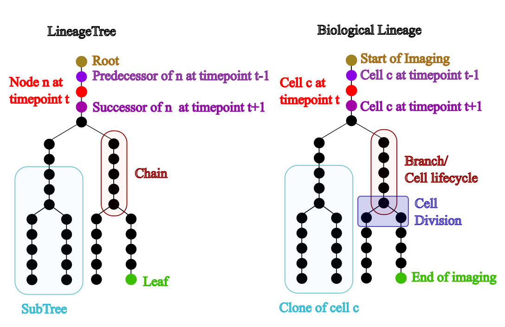

Glossary
This tool may interest individuals with and without a background in computer science, so all users need to become familiar with the nomenclature used by LineageTree. To that end, this glossary defines the terms used throughout the project.
-
Tree Graphs¶
A tree graph is a hierarchical acyclic graph that contains nodes and edges, LineageTree is a tree graph that has at most 2 successors for one node. To create a demo tree the user can call
from lineagetree import LineageTree
lT = LineageTree(successors= {i:[i+1] for i in range(10)})
-
Nodes: The smallest part of a LineageTree, representing a point (usually a cell at a timepoint). All nodes can be accessed with
lT.nodes. -
Edges: Objects that connect two nodes. In a lineage tree the edges are directed. All edges can be accessed with
lT.edges. -
Successors: The successor of a node n at time t is the node n' at time t+1 that connects from n. The mapping of all successors can be accessed with
lT.successor. -
Predecessors: The predecessor of a node n at time t is the node n' at time t−1 that connects into n. The mapping of all predecessors can be accessed with
lT.predecessor. -
Roots: A node with no predecessors. In LineageTree, a root has an empty tuple as predecessor. Multiple roots may exist. All roots can be accessed with
lT.roots. -
Leaves: A node with no successors. In LineageTree, a leaf has an empty tuple as successor. All leaves can be accessed with
lT.leaves. -
Chains: A tree segment where all nodes lie between a root or division and a division or leaf. The chain containing node
ncan be accessed withlT.get_chain_of_node(n). A continuous part of a chain is a subchain or path. -
Divisions: Events where one node has two successors instead of one. Divisions are inferred because the node before a division is at the end of a chain.
-
Subtree: Any tree segment that is itself a tree. The subtree rooted at a given node can be retrieved with
lT.get_sub_tree(node). -
Siblings: Two nodes that share the same predecessor. Often refers to the first nodes of chains originating from the same division.
-
Time: The discrete timepoint at which nodes exist (not real time). All node → time information can be accessed with
lT.times. -
Time resolution: The duration represented by one timepoint. Useful for comparing different lineages. This value can be accessed via
lT.time_resolution.
